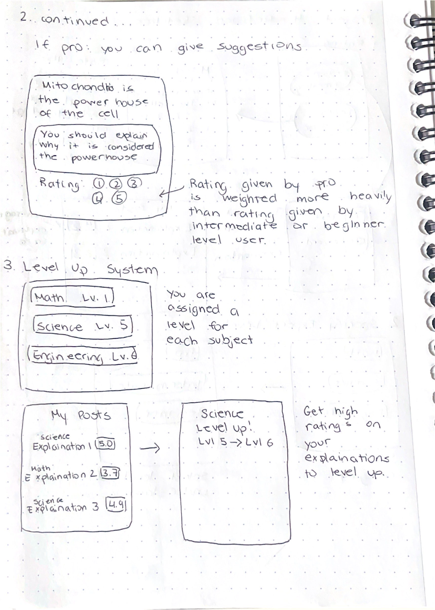
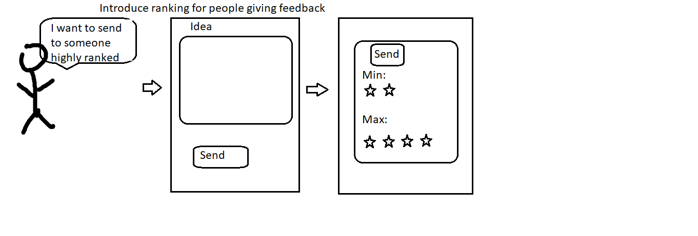
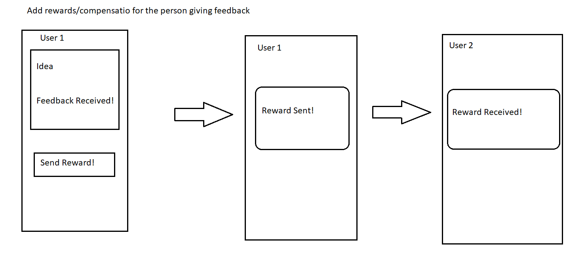
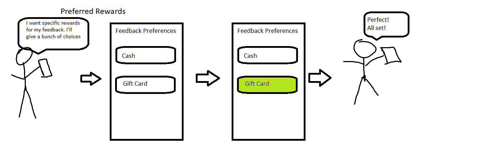
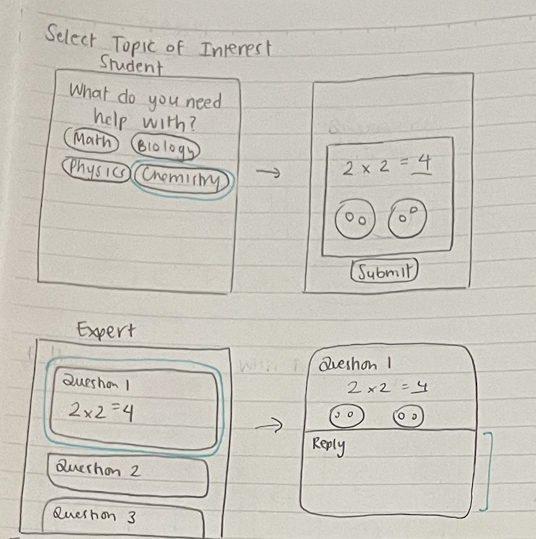
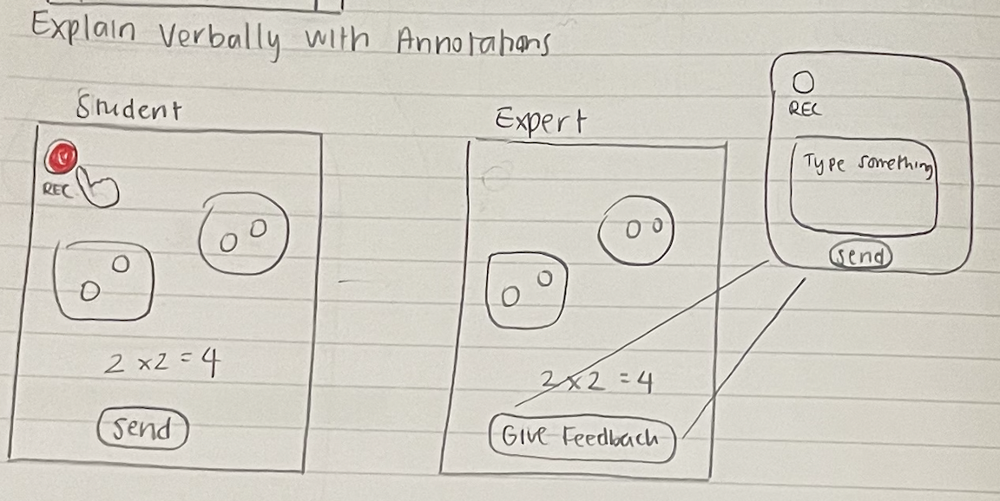

1. Users can rate explanations out of 5 from 1 - did not understand at all to 5 - completely understand. Users have the option to either record or type out their explanation. 2.Different features are available depending on the expert
level of the user. For example, only pro-level users can provide suggestions for explanations.

Refined Sketch 2 by Sophia
A level-up system where the user can gain level up points by achieving high ratings for their explanations.

Refined Sketch 3 by Daniel
A refinement for As If I Knew Nothing adding ranking for the people who give feedback!

Refined Sketch 4 by Daniel
A refinement for As If I Knew Nothing that allows users to send compensation for feedback

Refined Sketch 5 by Daniel
A refinement for As If I Knew Nothing which allows the people who give feedback to choose how they prefer to get compensated

Refined Sketch 6 by Marela
A student can request help for a particular subject by constructing a drawing of their understanding and submitting it for an expert in that subject to give feedback. Experts can enter the app and select from a pool of questions, in their subject of specialty,
to provide feedback for.

Refined Sketch 7 by Marela
Students can draw a diagram and give a verbal explanation that they would then send to a random expert who can reply with text or audio.